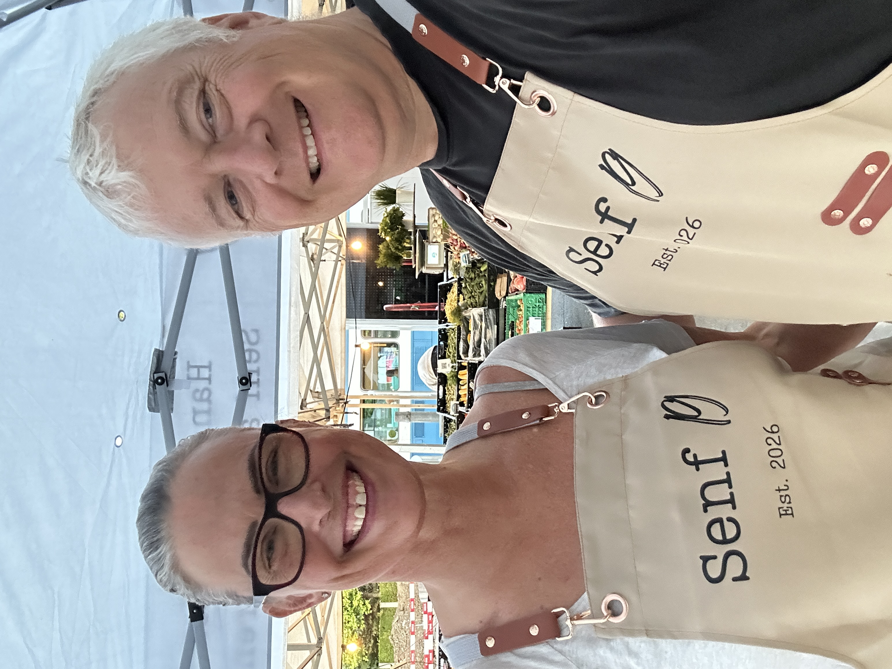

Herzlich willkommen!
Hier informieren wir Sie regelmässig über unsere anstehenden Märkte, neue Sorten und besondere Aktionen. Wir freuen uns, Sie persönlich an unserem Stand zu begrüssen!
Nächste Märkte & Termine
Besuchen Sie uns vor Ort und probieren Sie unsere handgemachten Senfsorten:
- Freitag, 28. August – Bürkliplatz Zürich 06:00 – 11:00 Uhr
- Samstag, 29. August – Wochenmarkt Schlieren 08:00 – 12:00 Uhr
-
Danach sind wir frühestens Ende September, also 25./26.09., wieder auf einem Markt.
Unser beliebter Aprikosensenf ist inzwischen fast ausverkauft. 🍑
Falls Sie noch ein Glas möchten, reservieren Sie es am besten gleich bei uns, damit wir Ihnen eines zurücklegen können.
Und natürlich tüfteln wir bereits weiter:
Wir testen gerade eine neue Senf-Sorte! 🌿
Sie dürfen sie dieses Wochenende gerne bei uns probieren und uns Ihre Meinung dazu sagen. Vielleicht wird sie ja unser nächster Liebling! 😉
Nach diesem Wochenende sind wir erst Ende September wieder an einem Markt anzutreffen.
Wir freuen uns auf Sie, auf viele bekannte Gesichter und natürlich auf neugierige Senf-Tester! 💛
Herzlich
Cornelia & Christian
P.S.: Ganz neu, unsere Senf 19 Schürzen. Damit sind wir noch besser zu erkennen.

Sie möchten eine grössere Menge bestellen oder haben Fragen?
Jetzt Kontakt aufnehmen